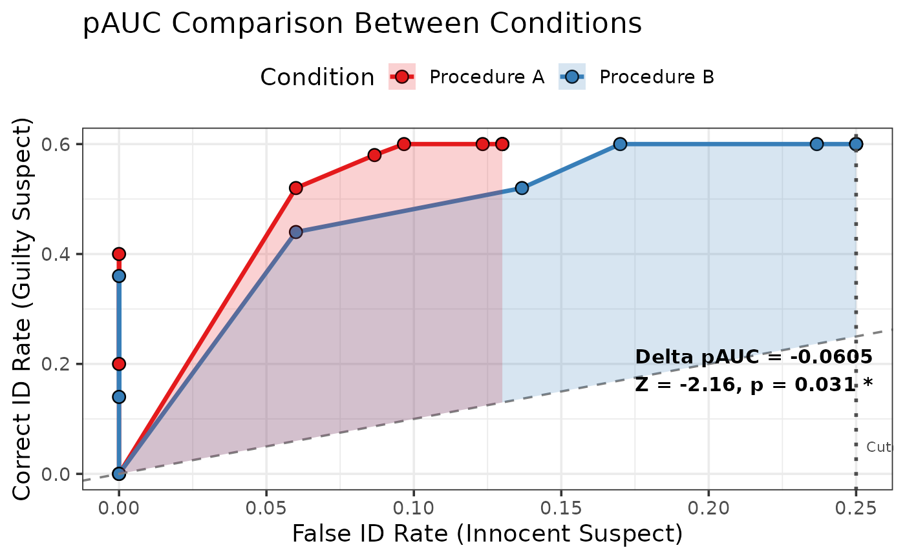

Statistically compares partial Area Under the Curve (pAUC) values between two lineup conditions using bootstrap-based standard errors and z-tests. Follows the methodology from pyWitness (Mickes et al., 2024).
Usage
compare_pauc(
data1,
data2,
lineup_size = 6,
max_false_id_rate = NULL,
n_bootstrap = 2000,
conf_level = 0.95,
seed = NULL,
label1 = "Condition 1",
label2 = "Condition 2"
)Arguments
- data1
First dataset (dataframe with target_present, identification, confidence)
- data2
Second dataset (same format as data1)
- lineup_size
Integer. Number of people in lineup (default = 6)
- max_false_id_rate
Numeric. Maximum false ID rate for pAUC calculation (default = NULL, which uses the maximum observed false ID rate across both conditions)
- n_bootstrap
Integer. Number of bootstrap samples (default = 2000)
- conf_level
Numeric. Confidence level for intervals (default = 0.95)
- seed
Integer. Random seed for reproducibility (default = NULL)
- label1
Character. Label for first condition (default = "Condition 1")
- label2
Character. Label for second condition (default = "Condition 2")
Value
An object of class "pauc_comparison" containing:
pauc1: pAUC for condition 1
pauc2: pAUC for condition 2
pauc_diff: Difference in pAUC (pauc1 - pauc2)
se_pauc1: Bootstrap standard error for pAUC1
se_pauc2: Bootstrap standard error for pAUC2
se_diff: Standard error of the difference
z_score: Z-statistic for difference test
p_value: Two-tailed p-value
ci_diff: Confidence interval for difference
roc1: ROC object for condition 1
roc2: ROC object for condition 2
max_false_id_rate: Cutoff used for pAUC
label1, label2: Condition labels
n_bootstrap: Number of bootstrap samples used
Details
This function implements a rigorous statistical test for comparing ROC curves between two conditions (e.g., simultaneous vs. sequential lineups, different retention intervals, etc.).
**Method:**
Computes pAUC for each condition (optionally up to a maximum false ID rate)
Uses bootstrap resampling to estimate standard errors
Computes Z-statistic: Z = (pAUC1 - pAUC2) / SE(pAUC1 - pAUC2)
Calculates p-value from standard normal distribution
**Interpretation:**
Positive pAUC difference: Condition 1 has better discriminability
Negative pAUC difference: Condition 2 has better discriminability
p < 0.05: Significant difference between conditions
References
Mickes, L., Seale-Carlisle, T. M., Chen, X., & Boogert, S. (2024). pyWitness 1.0: A python eyewitness identification analysis toolkit. Behavior Research Methods, 56, 1533-1550.
Wixted, J. T., & Mickes, L. (2012). The field of eyewitness memory should abandon probative value and embrace receiver operating characteristic analysis. Perspectives on Psychological Science, 7(3), 275-278.
Examples
# \donttest{
# Compare two lineup procedures (halves of the example data)
data(lineup_example)
odd <- seq(1, nrow(lineup_example), by = 2)
comparison <- compare_pauc(
lineup_example[odd, ],
lineup_example[-odd, ],
label1 = "Procedure A",
label2 = "Procedure B",
n_bootstrap = 200,
seed = 123
)
#> Computing bootstrap standard errors (200 samples)...
#> Done!
print(comparison)
#>
#> === pAUC Comparison Analysis ===
#>
#> Conditions:
#> Procedure A: pAUC = 0.0562 (SE = 0.018)
#> Procedure B: pAUC = 0.1167 (SE = 0.0213)
#>
#> Difference: -0.0605
#> 95% CI: [-0.1155, -0.0055]
#>
#> Statistical Test:
#> Z = -2.157
#> p-value = 0.031
#>
#> Interpretation: Procedure B has higher discriminability than Procedure A (*)
#>
#> Max false ID rate cutoff: 0.25
#> Bootstrap samples: 200
#>
#> Note: *** p<0.001, ** p<0.01, * p<0.05, ns = not significant
plot(comparison)

# }